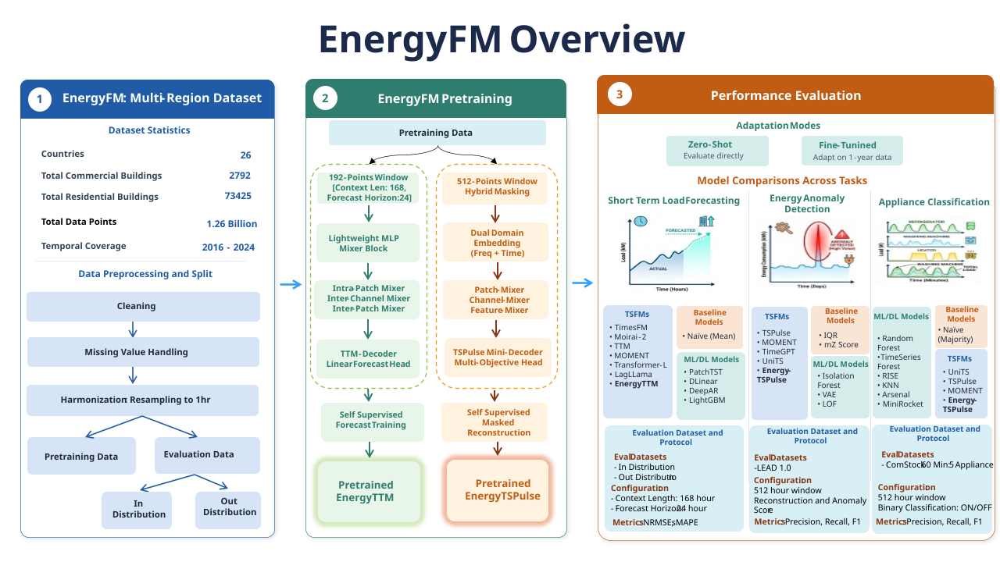
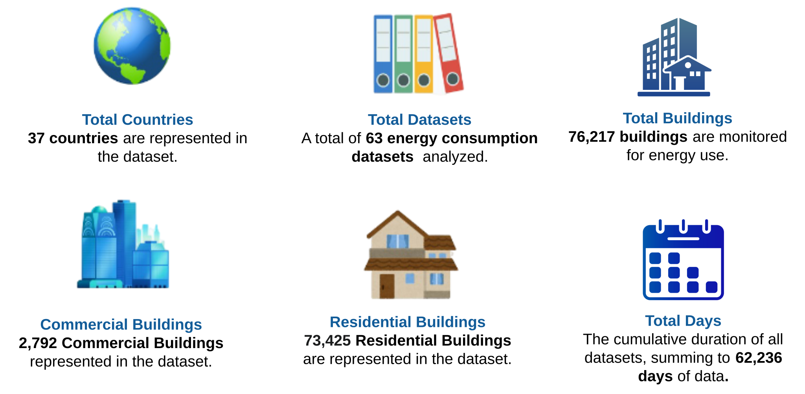

EnergyFM is a family of
domain-specific Time Series Foundation Models (TSFMs) for smart energy meter analytics. Built upon
the Tiny Time Mixer (TTM) and TSPulse architectures, we introduce
two pre-trained foundation models Energy-TTM and
Energy-TSPulse designed specifically for energy meter data.
EnergyFM
supports multiple downstream tasks, including load forecasting, anomaly
detection, and appliance classification. The models are pre-trained on
1.26 billion hourly smart meter readings from 76,217 commercial
and residential buildings spanning multiple countries, climate zones, and building types.
By learning rich representations of energy consumption through self-supervised learning, EnergyFM
achieves state-of-the-art or competitive performance in both zero-shot and
fine-tuning settings, providing a scalable foundation for next-generation energy
analytics.

Large-scale smart meter repository used for pretraining and benchmarking.

EnergyFM is evaluated across three downstream tasks on both in-distribution (ID) and out-of-distribution (OOD) building splits to assess generalization under zero-shot and fine-tuning settings.
Models are evaluated using the standard 168-hour context → 24-hour prediction setup. Forecasting performance is reported using NRMSE.
Table 1. Comparative forecasting split monitoring OOD vs ID absolute errors.
Models are evaluated on the LEAD 1.0 benchmark following the official evaluation protocol. Performance is measured using Precision, Recall, and Macro F1-score.
Table 2. Precision, Recall, and F1 performance indices for outlier classification.
Appliance ownership prediction is formulated as a time-series classification task using hourly smart meter readings. Performance is reported using Precision, Recall, and Macro F1-score.
Table 3. Downstream tier ratings for structural home appliance identification.
Finding 1.
Target Pretraining Advantages.
Energy-specific platform pretraining yields prominent
accuracy upgrades across deep forecasting runs.
Finding 2.
Zero-Shot Robustness.
Energy-TTM achieves remarkably high baseline zero-shot data
transfers without requiring downstream localized loops.
Finding 3.
Multi-Domain Space Maps.
Energy-TSPulse captures highly transferable latent
representations across complex temporal configurations.
git clone https://github.com/energyfms/notebooks.git
cd notebooks
pip install -r requirements.txtMultiple pre-trained variants optimized for different datasets and downstream applications. All checkpoints are available as branches on Hugging Face.
@inproceedings{energyfm2026,
title={EnergyFM: Pretrained Models for Energy Meter Data Analytics},
author={Arjunan, Pandarasamy and Srivastava, Naman and Kumar, Kajeeth and Jati, Arindam and Ekambaram, Vijay and Dayama, Pankaj},
booktitle={Proceedings of the 17th ACM International Conference on Future and Sustainable Energy Systems},
pages={556--568},
year={2026}
}